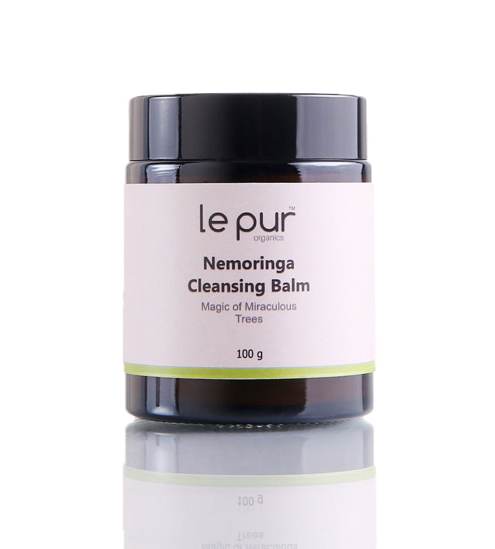

Dawn Images · 4 August 2023
Going loco for local: Le Pur Organics’ Nemoringa Cleansing Balm is a game changer
“The makeup removing balm has taken my double cleansing routine up a notch and I have nothing but praise for it.”Dawn Images, August 2023
The review focused on the balm's texture, its ability to melt away makeup, and its place in a double-cleansing routine. It also noted the ingredients behind the formula, including grapeseed oil, shea butter, moringa oil, moringa extract, neem oil, neem extract, beeswax and tea tree essential oil.
Read the full review on Dawn ImagesOpens on images.dawn.com in a new page.